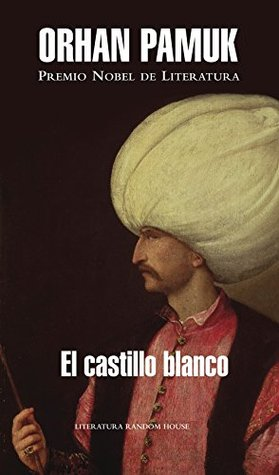

El castillo blanco
Reseña por Jorge I. Zuluaga

Ver reseña en GoodReads (necesita cuenta)
Aunque El castillo blanco carece de la profundidad y riqueza de Me llamo rojo , la narración tiene algunos paralelos con esta última. La novela cuenta la historia de un joven italiano capturado por fuerzas turcas, que termina primero como cautivo del sultán en Estambul y después es entregado por el mismo sultán como esclavo a un maestro astrólogo y polvorero de la misma ciudad.
La historia está contada en primera persona —aunque no sabemos a la larga cuál es esa persona— y nunca conocemos el nombre de ninguno de los personajes, incluyendo el sultán. Es difícil, por la misma razón, ubicar la novela en el tiempo; pero, a juzgar por las situaciones y la tecnología descrita, diría que se desarrolla durante el siglo XVII.
Lo más interesante de El castillo blanco es el juego con la identidad de los personajes. En una de las escenas de la novela, el joven italiano se topa con una persona físicamente idéntica a él, quien a la larga se convertirá en el maestro y en su amo durante su estadía en Estambul. Al pasar las páginas, pero especialmente hacia el final de la novela, vamos perdiendo la seguridad de quién es el que cuenta la historia, si el joven o el maestro; una idea, al menos para mí, bastante original.
Lo negativo, y la razón por la que le doy este puntaje, es que hay largos apartes de la novela que resultan pesados por repetitivos o simplemente —y tal vez en apariencia— inocuos para la historia. Es cierto que una relectura (que de pronto haré en el futuro) podría revelar que esos pasajes contienen pequeños detalles que no son tan irrelevantes como parece en una primera visita a la novela; pero la verdad es que me aburrí bastante en varios momentos, cosa que no me pasó, por ejemplo, con Me llamo rojo .
La historia, a pesar de lo interesante, tampoco termina de cerrar muy bien para mí; así que, aunque aprecio el efecto de la confusión entre la identidad de los personajes, creo que la novela enreda más de lo que debería ese aspecto, hasta hacerla, si no merecedora de abandono, al menos mucho menos ágil de leer.
A pesar de todo, Orhan Pamuk sigue ascendiendo como un autor predilecto. A por sus otras obras.